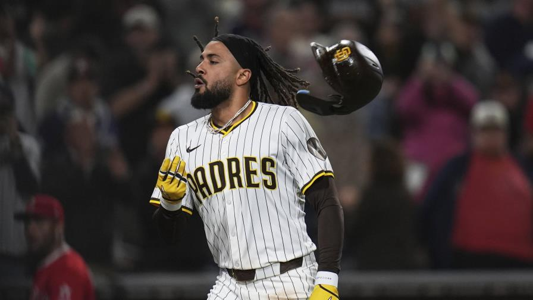

conecta cuadrangular y deja en el terreno a los Angelinos
El antesalista Manny Machado extendió a 13 su racha de partidos consecutivos conectando de hit

Fernando Tatis Jr.conectó un jonrón de 430 pies por el jardín central para remolcar dos carreras en el noveno capítulo y darles el martes a los Padres de San Diego una victoria con remontada, 6-4 sobre los Angelinos de Los Ángeles.
El dominicano Fernando Tatis, de los Padres de San Diego, festeja tras conectar un jonrón de dos carreras para finiquitar el juego ante los Angelinos de Los Ángeles, el martes 13 de mayo de 2025 (AP/GREGORY BULL)
El dominicano dejó caer el bate enfáticamente y observó cómo la pelota volaba después de conectar un cutter del cerrador de los Angelinos, Kenley Jansen (0-2), quien cargó con la derrota.
Fecha: 14 mayo de 2025 | Publicado por: Equipo de Investigacion